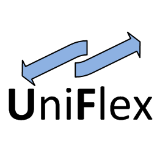

UniFlex
f96ea62
TWIST Testbed
TKN TU-Berlin
Documentation
Installation
Running examples
uniflex
Table of Contents
uniflex
Topics
Running examples
uniflex package
uniflex
¶
uniflex package
Subpackages
uniflex.core package
Submodules
uniflex.core.agent module
uniflex.core.broker module
uniflex.core.cmd_executor module
uniflex.core.common module
uniflex.core.events module
uniflex.core.exceptions module
uniflex.core.module_manager module
uniflex.core.module_proxy module
uniflex.core.modules module
uniflex.core.node module
uniflex.core.node_manager module
uniflex.core.timer module
uniflex.core.transport_channel module
Module contents
uniflex.msgs package
Submodules
uniflex.msgs.messages_pb2 module
uniflex.msgs.msg_helper module
uniflex.msgs.msgdescription module
Module contents
Module contents